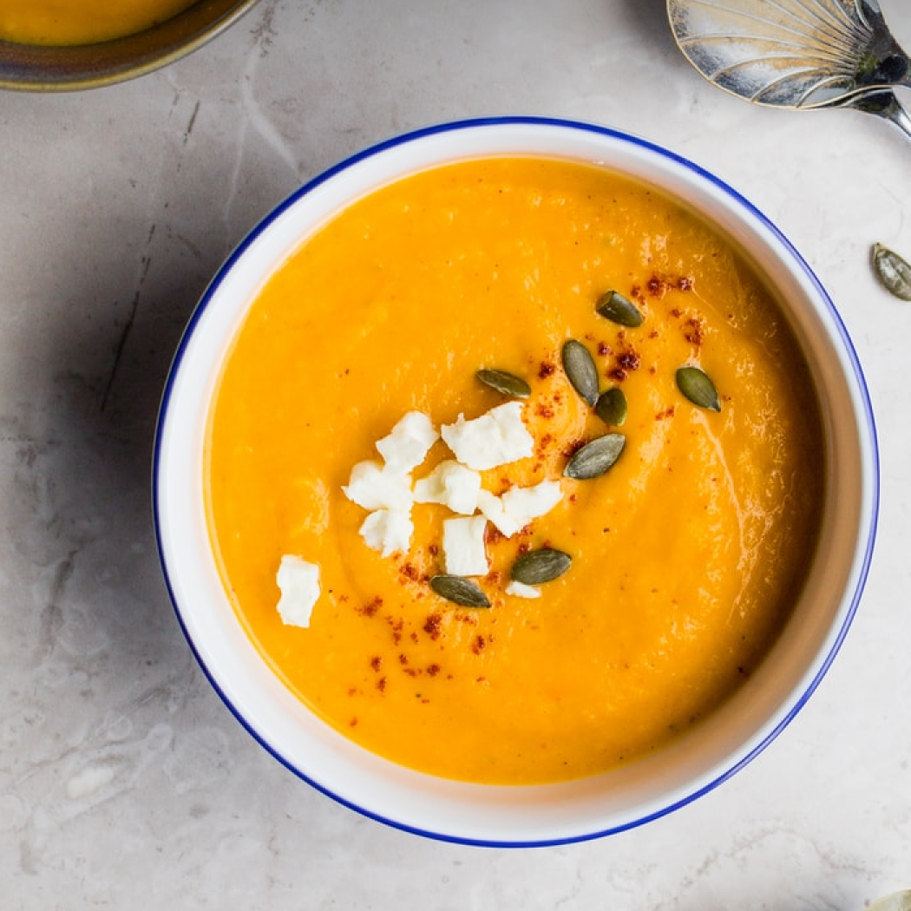

Recipies
Checkout our most delicious and healthy dishes. From those tons of dishes choose the best one for yourself.

Fresh Salad
Made with the fresh and finest vegetables directly from our garden. Its fresh,tasty and healthy.

Lamb Steak
This mouth watering dish is lamb steak. Prepared with the fresh and finest meat of lamb.

Butter Dessert
Tongue tickling right? This is our one of the signature dish called butter dessert.